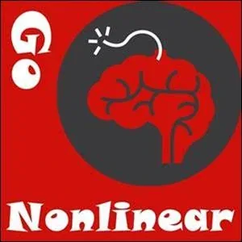

Improvise on Strikingly
[

](http://boxtechnology.mystrikingly.com/)
IMPROVISE WAYS TO AVOID IMPROVISING - REFUSE TO IMPROVISE
Matrix Code IMPROVIS.01
For this experiment, refuse to improvise. Do everything by the book. Do not deviate. Follow the rules, even if you do not like them. Flagellate yourself with a wet noodle every time you don't follow the rule. Do this for whole 3 days.
If someone asks you a question and you are not 100% sure to be able to prove your answer with facts and online references, then do not answer. Just go blank. Or, for example, if someone asks you "how are you?" tell them "I can't answer this question", because you cannot be factual about something so subjective.
When you are cooking and you have the option to spice your food up differently, do not. When you open up your computer, open up your email up first like you always do. Do not ask yourself if you want to do anything else first.
Do this experiment for exactly 72 hours, no more, no less.
After completing this experiment, please register Matrix Code IMPROVIS.01 in your free account at StartOver.xyz.
This Experiment is worth 1 Matrix Point.
[
](http://becomeaseed.mystrikingly.com/)
IMPROVISE 9 WAYS OF SAYING HELLO
Matrix Code IMPROVIS.02
Invent exactly 9 ways of greeting someone, using sounds, gestures, movement and choreography. For 3 days, every time you greet someone, use your 9 greetings exactly one after the other in a specific chosen sequence. When you forget and say simply "hello", you start at number one of the sequence again.
Upload a video of your Nine New Greetings.
After completing this experiment, please upload a link to your video and register Matrix Code IMPROVIS.02 in your free account at StartOver.xyz.
This Experiment is worth 1 Matrix Point.
[
](http://gameworldtraditions.mystrikingly.com/)
IMPROVISE 9 WAYS OF SAYING GOODBYE
Matrix Code IMPROVIS.03
Invent exactly 9 ways of saying goodbye, using sounds, gestures, movement and choreography. For 3 days, every time you greet someone, use your 9 greetings exactly one after the other in a specific chosen sequence. When you forget and say a usual goodbye you start at number 1 of the sequence again.
Upload a video of your Nine New Goodbyes.
After completing this experiment, please upload a link to your video and register Matrix Code IMPROVIS.03 in your free account at StartOver.xyz.
This Experiment is worth 1 Matrix Point.
[

](http://gononlinear.mystrikingly.com/)
IMPROVISE 9 WAYS OF MESSAGING HELLO
Matrix Code IMPROVIS.04
Invent exactly 9 ways of greeting someone with words, emojis, voice, picture, gifs, combinations of links and invites. Use them exactly one after the other in a chosen sequence for 3 days every time you greet someone. When you forget and write a usual "hello/hey/hi" you start at number one of the sequence again.
After completing this experiment, please register Matrix Code IMPROVIS.04 in your free account at StartOver.xyz.
This Experiment is worth 1 Matrix Point.
[

](http://gototheedge.mystrikingly.com/)
IMPROVISE ORDERING WHAT IS NOT ON THE MENU
Matrix Code IMPROVIS.05
At the restaurant, never order what is on the menu. Always ask for a strange mix of something, that doesn't usually go together. For example, mix salad and soup together in the same bowl. Ask the waiter "Please, I want to order this salad and soup together, please make sure the chef puts the salad inside the soup bowl."
When your food order comes, eat it, however it came. Do this at 5 different restaurants. Experiment with not explaining this to your mates at the table.
After completing this experiment, please upload your picture and register Matrix Code IMPROVIS.05 in your free account at StartOver.xyz.
This Experiment is worth 1 Matrix Point.
[
](http://villaging.mystrikingly.com/)
IMPROVISE DIFFERENT CLOTHING TO WEAR FOR A WEEK
Matrix Code IMPROVIS.06
Each day, for the next week, wear something that is not usually used as an article of clothing. Wrap yourself in newspaper or put a sieve on your head. Wear it all day. To work, to a date, to a job interview, to bed.
Take a picture of your 7 different outfits.
After completing this experiment, please register Matrix Code IMPROVIS.02 in your free account at StartOver.xyz.
This Experiment is worth 1 Matrix Point.
[

](http://firstposition.mystrikingly.com/)
IMPROVISE NEW WAYS OF BEING AMBIDEXTROUS AND FLEXIBLE
Matrix Code IMPROVIS.07
Put your writing arm in a sling, as if you have a broken arm. For 2 days do not use that arm for anything, not even your fingers. Use other parts of your body to get things done. Try to find at least 3 different possibilities for everything you do. Do not cheat and ask other people to do everything for you. (If you have trouble asking for help, you could choose to have your arm in a sling for another day and improvise creative ways of asking for help, even for things you can actually still do yourself).
After completing this experiment, please register Matrix Code IMPROVIS.07 in your free account at StartOver.xyz.
This Experiment is worth 1 Matrix Point.
[
](http://gapinidentity.mystrikingly.com/)
IMPROVISE 6 NEW WAYS TO EAT MEALS IN PUBLIC
Matrix Code IMPROVIS.08
Invent 6 ways of eating without cutlery (knife, fork, chopsticks, spoon). You can invite a second person to do this experiment with. Eat a meal with your 6 different ways of eating, in public.
After completing this experiment, please register Matrix Code IMPROVIS.08 in your free account at StartOver.xyz.
This Experiment is worth 1 Matrix Point.
[

](http://13tools.mystrikingly.com/)
IMPROVISE NEW TOOLS TO USE FOR EVERYDAY ACTIVITIES
Matrix Code IMPROVIS.09
For the next 3 days, choose 6 utensils that are not considered as the appropriate or usually used utensils for these activities. A hammer is the easiest tool to improvise. Try other things. Carry those 6 utensils with you in a bag and use them on all the stuff you need to do.
Take a picture of yourself using a potato peeler to open the door, or something along those lines.
After completing this experiment, please upload your photo and register Matrix Code IMPROVIS.09 in your free account at StartOver.xyz.
This Experiment is worth 1 Matrix Point.
[

](http://problems.mystrikingly.com/)
IMPROVISE ALTERNATIVE STRATEGIES FOR SOLVING MULTIPLE KINDS OF PROBLEMS
Matrix Code IMPROVIS.10
Do this at your online or offline Possibility Team. Get in groups of 3. One person is the Spaceholder, another is the Problem-generator, the other is Improvisor.
The Problem-generator creates a problem, and the Improvisor needs to solve that problem using anything they can use at their arms reach, without moving out of their seat. For example, one problem could be "Make a fishing line". The Improvisor could grab their headphone cable and twist it into a fishing net and explain how they would make the fishing line.
The Spaceholder gives feedback, tells the Improvisor when they are cheating, when they have used that solution before, and coaches the Improvisor to get unstuck.
The Problem-generator gives the Improvisor problems for 10-15 minutes and then the whole team changes roles.
After completing this experiment, please register Matrix Code IMPROVIS.10 in your free account at StartOver.xyz.
This Experiment is worth 1 Matrix Point.
[
](http://speakings.mystrikingly.com/)
IMPROVISE MULTIPLE WAYS TO HAVE CONVERSATIONS WITH ORDINARY PEOPLE
Matrix Code IMPROVIS.11
Do this at your online or offline Possibility Team. Get in groups of 3. One person is the Spaceholder, another is the Problem-generator, the other is the Improvisor.
The Problem-generator tells the Improvisor to call someone on the phone, and tell them who they should call. The improvisor actually calls the person. The improvisor needs to have a 5 minutes improvised conversation with that person that creates good Possibilities, Discoveries, or Transformation. The Spaceholder and the Problem-generator both coach the Improvisor.
After 5 minutes rotate roles.
After completing this experiment, please register Matrix Code IMPROVIS.11 in your free account at StartOver.xyz.
This Experiment is worth 1 Matrix Point.
[

](http://scanning.mystrikingly.com/)
IMPROVISE CONNECTING AND INTERPRETING WHAT OTHER PEOPLE ARE TRYING TO SAY
Matrix Code IMPROVIS.12
Do this at your online or offline Possibility Team. Get in groups of 3. One person is the Spaceholder, another is the Improvisor, the other is the Client.
The Improvisor's job is to scan the client and say: "W_hat you really want to say is..._" and to give 5 different options to the client.
The Improvisor connects to the client and says what the client wants to say as a specific animal, a specific plant, or force of nature, with actual words, speaking from the wisdom of the snail, tomato, or lightning bolt, for example. The Spaceholder is coaching the Improvisor.
After completing this experiment, please register Matrix Code IMPROVIS.12 in your free account at StartOver.xyz.
This Experiment is worth 1 Matrix Point.

SHIFT IDENTITY AND IN THE NEW EXPERIENCE SCAN AND INFORM PEOPLE WHAT THEY ACTUALLY ARE TRYING TO SAY
Matrix Code IMPROVIS.13
Do this at your online or offline Possibility Team. Get in groups of 3. One person is the Spaceholder, another is the Improvisor, the other is the Client. The Improvisor's job is to scan the Client and say: "W_hat you really want to say is..._" and then give 5 different options to the Client.
The Improvisor takes the character of a historical or fictional character, like Buster Keaton, Florence Nightingale or Ghengis Khan. The Spaceholder is coaching the Improvisor to really Shift Identity and to really scan.
After completing this experiment, please register Matrix Code IMPROVIS.13 in your free account at StartOver.xyz.
This Experiment is worth 1 Matrix Point.
[

](http://gounreasonable.mystrikingly.com/)
IMPROVISE NEW WAYS OF SEEING PEOPLE AND THEIR NEEDS AND GIVE THEM THE TREASURE OF POSSIBILITIES
Matrix Code IMPROVIS.14
This is an online Experiment. Get in groups of 3. One person is the Spaceholder, another is the Improvisor, the other is the Person Living Their Life.
The Improvisor is a Transformational Window Washer. Usually the window washer goes up the ropes and washes the windows of all of the floors in a building and looks into thousands of people's lives in their living rooms, kitchens and bathrooms.
Instead of looking through windows, the Transformational Window Washer is looking at you through their computer screen. They are scanning you and they have the wisdom of having scanned thousands of people before.
The Transformational Window Washer looks at the Person Living Their Life through the screen and says: "H__ere is what's going on for you. Here is what you need to do, what you need to stop". Be specific. Go on for 5 minutes and then switch roles. The Spaceholder coaches the Transformational Window Washer to tap into and rely on their people-scanning wisdom resources.
Also the Window Washer has a speech impediment.
After completing this experiment, please register Matrix Code IMPROVIS.14 in your free account at StartOver.xyz.
This Experiment is worth 1 Matrix Point.
[
](http://expectations.mystrikingly.com/)
IMPROVISE STUTTERING AS A WAY OF SLOWING OR SPEEDING TIME AND CREATING POSSIBILITY FOR OTHERS
Matrix Code IMPROVIS.15
This Experiment is done in pairs. One person is the mother and the other person stutters. They have a conversation of the success or not success of the stutterer. The mother wants the stutterer to be successful and at the same time is complaining and blaming them all the time. The stutterer just stutters throughout the conversation, trying to prove that they are successful.
Use your stuttering strategically and ongoingly keep committed to create Possibility during this conversation. After 10 minutes, switch roles.
After completing this experiment, please register Matrix Code IMPROVIS.15 in your free account at StartOver.xyz.
This Experiment is worth 1 Matrix Point.
[

](http://storyworld.mystrikingly.com/)
IMPROVISE TRANSLATING STORIES OR REPORTS INTO NEW LANGUAGES SOME OF WHICH ARE UNIVERSAL LANGUAGES
Matrix Code IMPROVIS.16
Do this Experiment at your online or offline Possibility Team. Get in groups of 3. One person is the Storyteller, and the other two are the translators.
The Storyteller tells a completely outrageous non-linear story. The first translator translates the story in an alien language that does not exist on the planet. The second translator translates the story into sign language (not charades) using sign language. Do this for 30 whole minutes each person, before rotating.
After completing this experiment, please register Matrix Code IMPROVIS.16 in your free account at StartOver.xyz.
This Experiment is worth 1 Matrix Point.
[
](http://judgements.mystrikingly.com/)
IMPROVISE HAVING A TABOO-BREAKING SOCIALLY OFFENSIVE BUT RADICALLY TRUTHFUL TOURETTE'S SYNDROME
Matrix Code IMPROVIS.17
Get in groups of 3. One person has Tourette Syndrome, and the two others are interviewers. The person with Tourette's is trying to apply for a job in an interview, and the interviewer asks real questions. It is a taboo-breaking, socially offensive but radically truthful Tourette Syndrome and conversation.
After 7 minutes, changes roles.
After completing this experiment, please register Matrix Code IMPROVIS.17 in your free account at StartOver.xyz.
This Experiment is worth 1 Matrix Point.
[
](http://justifications.mystrikingly.com/)
IMPROVISE ABSOLUTELY RADICAL JUSTIFICATIONS FOR YOUR PROPOSALS DURING DISAGREEMENTS OR ARGUING
Matrix Code IMPROVIS.18
You have 2 people. They are both communicating in a different language from the other. One person is an ancient Egyptian, and the other is an Inca person, and they are arguing about who has the better pyramids.
Really commit to your role. Use your Feelings. Make a video recording of your argument. Switch cultures and improvise again.
After completing this experiment, please register Matrix Code IMPROVIS.18 in your free account at StartOver.xyz.
This Experiment is worth 1 Matrix Point.
[
](http://doorway.mystrikingly.com/)
IMPROVISE LEGENDS AND POSSIBILITIES THAT OPEN DOORWAYS FOR THE CLIENT TO 'BUY' WHAT YOU ARE OFFERING TO THEM
Matrix Code IMPROVIS.19
Get in groups of 3. There is a Spaceholder, a Seller, and a Client. The Seller starts a conversation by pulling out one of the 13 tools without knowing which one comes out and tries to sell it to the Client. The Client cannot say no or yes, they cannot say that they are going to buy it or not buy it. The point is to keep the conversation for 13 minutes! Then change roles. The Spaceholder gives live Feedback and Coaching to both the Seller and the Client.
After completing this experiment, please register Matrix Code IMPROVIS.19 in your free account at StartOver.xyz.
This Experiment is worth 1 Matrix Point.
[
](http://possibilicacookbook.mystrikingly.com/)
IMPROVISE NOVEL NEW COMBINATIONS OF FOOD TO CREATE ASTONISHINGLY DELICIOUS RECIPES TO EAT WITH FRIENDS
Matrix Code IMPROVIS.20
Get in groups of 3. You have 4 minutes. All at the same time, wherever you are, go to the refrigerator. You take 3 objects from the fridge that you have never put together before. You have to put them together, show them to each other and eat it. Have a conversation with each other while you are eating it about why your combination is better.
After completing this experiment, please register Matrix Code IMPROVIS.20 in your free account at StartOver.xyz.
This Experiment is worth 1 Matrix Point.
[

](http://proposals.mystrikingly.com/)
IMPROVISE NEW EFFORTS TO MAKE OFFERS OF "YES, AND..." IN VARIOUS DIFFICULT SITUATIONS OR CONFLICTS
Matrix Code IMPROVIS.21
Get in groups of 3. One person is the Spaceholder. Two people are improvising a conversation here. The first Improvisor starts by making an open offer to the second Improvisor, for example: "Do you want to go and grill aubergines in the garden waving little pink flags?"
Both Improvisor's job is to keep creating something they are really interested in, and start each sentence with "yes and". The conversation goes back and forth between the two Improvisors, each making the conversation more interesting, more incredible, more outrageous, more impossible, more transformational. Each conversation goes on for 10 minutes. Then rotate. The Spaceholder coaches the Improvisors to be interested rather than interesting.
Next, improvise a conversation in which one Improvisor brings bad news or attacks the other Improvisor and generally has a non-collaborative attitude. The other Improvisor improvises ways to be a "yes and" to whatever the Improvisor says, always finding a Possibility to make it work without saying No or negating what the Improvisor is proposing.
After completing this experiment, please register Matrix Code IMPROVIS.21 in your free account at StartOver.xyz.
This Experiment is worth 1 Matrix Point.
[
](http://archearchalmusic.mystrikingly.com/)
IMPROVISE SIMPLE MUSIC FROM ARCHEARCHY IN A PERFORMANCE
Matrix Code IMPROVIS.22
Get in groups of 3. All 3 people have 2 minutes to bring back something they can use for a musical instrument. Count in and then either all start together or build up slowly one by one. You can also use their voice in addition. Make music together and record it for 13 minutes.
After completing this experiment, please register Matrix Code IMPROVIS.22 in your free account at StartOver.xyz.
This Experiment is worth 1 Matrix Point.
[

](http://torustechnology.mystrikingly.com/)
IMPROVISE USING MUSIC IN A TORUS MEETING AS A WAY OF ACHIEVING TEAMWORK AND COLLABORATION
Matrix Code IMPROVIS.23
For this Experiment, there is no limit of number of people. On the count of three, all people have 2 minutes to bring back an object, without knowing what it is for. When everyone comes back with an object tell them is to turn the object into a musical instrument. Form an orchestra and make music together for 10 minutes and record it.
Warning: The Spaceholder does not tell the rest of the team what the objects are for!
After completing this experiment, please register Matrix Code IMPROVIS.23 in your free account at StartOver.xyz.
This Experiment is worth 1 Matrix Point.
[
](https://lowdrama.mystrikingly.com/)
IMPROVISE A RAPID SERIES OF CAUSING AND CURING LOW DRAMAS BETWEEN INDIVIDUALS AND GROUPS
Matrix Code IMPROVIS.24
Get in groups of 3. One person improvises at a time. Each Improvisor makes a big dramatic victim story about or including the two other people in the group. Have a contest about which victim story is the best. Go into Low Drama about losing and about winning. 5-7 minutes per Improvisor and then switch.
Now, each Improvisor goes into Low Drama again, but this time the other two navigate the situation out of Low Drama. Improvise and learn ways to navigate out of Low Drama by doing.
Take notes in your Beep!Books.
After completing this experiment, please register Matrix Code IMPROVIS.24 in your free account at StartOver.xyz.
This Experiment is worth 1 Matrix Point.
[
](http://collaboration.mystrikingly.com/)
IMPROVISE NONLINEAR AND UNREASONABLE WAYS OF COLLABORATING IN SPECIFIC PROBLEMS OR CONFLICT SITUATIONS
Matrix Code IMPROVIS.25
For this Experiment, there is no limit of number of people. You can do this Experiment online or offline. With the whole group, create a genuine invitation or deliver a presentation about something, where each person of the group says one word, one after the other, making up the improvised invitation or presentation.
Record a video and share the video referencing this StartOver.xyz experiment.
After completing this experiment, please upload a link to your video and register Matrix Code IMPROVIS.25 in your free account at StartOver.xyz.
This Experiment is worth 1 Matrix Point.
[
](http://immediatism.mystrikingly.com/)
IMPROVISE BEING AN EXPERT ADVISOR ABOUT SPECIFIC REQUESTS IN EXTREME FANTASY SITUATIONS
Matrix Code IMPROVIS.26
Get in groups of 3, one is a Spaceholder, one is the Expert Advisor, and the other asks questions. One person says "How can I tell the difference between male and female flies?" and the Expert Advisor has to seriously explain in acute detail without laughing at all.
Questions:
How do you slice a tissue paper lengthways?
How do you teach a blind person to make themselves look better?
How do you grow sugar cane?
How do lizards grow they tail back?
How do starfish grow an arm back?
After completing this experiment, please register Matrix Code IMPROVIS.26 in your free account at StartOver.xyz.
This Experiment is worth 1 Matrix Point.
[

](http://infiniteresources.mystrikingly.com/)
IMPROVISE BEING AN EXPERT ADVISOR TO PROVIDE CLEAR PRACTICAL STRATEGIES FOR SOLVING ACTUAL LIFE-THREATENING GLOBAL PROBLEMS
Matrix Code IMPROVIS.27
This Experiment comes after the Expert Advisor Part 1. You are still in groups of 3. One person asks a question and again the Expert Advisor provides the answer in serious detail.
Questions:
How do we create world peace?
How do we solve the world plastic problem?
How do you prevent psychopaths from dominating your Gameworld?
How do we live well and thrive without using oil?
After completing this experiment, please register Matrix Code IMPROVIS.27 in your free account at StartOver.xyz.
This Experiment is worth 1 Matrix Point.
[

](http://speakfromtheunknown.mystrikingly.com/)
*IMPROVISE SPEAKING FROM THE UNKNOWN STARTING FROM ONE WORD AND PROVIDING VALUABLE CONSULTING AND GUIDANCE TO YOUR CLIENT*
Matrix Code IMPROVIS.28
One person speaks and one or two people hold space and give live Feedback and Coaching. Pick an object in the room or in your mind. Say the name of the object: for example carrot, chair, pen, mango, ... and from there, let the word unfold into a constructed sentence. In the beginning you might speak gibberish, do not worry. After a while, your access to the Unknown, to your Being, to your Archetypal Lineage, to your Bright Principles will take over and they will speak through you.
After completing this experiment, please register Matrix Code IMPROVIS.28 in your free account at StartOver.xyz.
This Experiment is worth 1 Matrix Point.